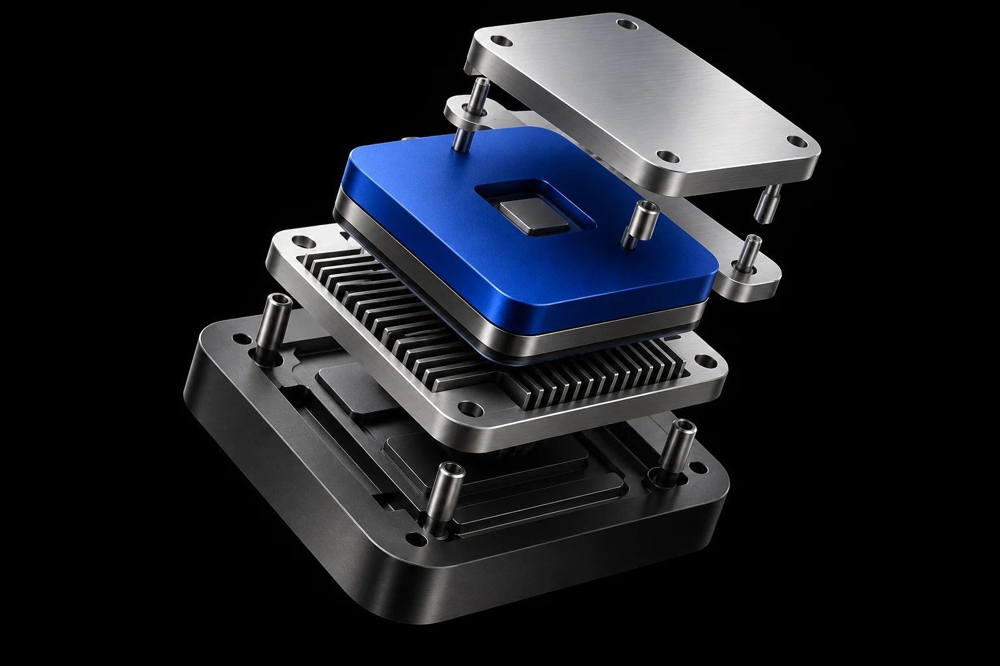

01 — SYSTEMS ENGINEERING

FROM BITS TO A RUNNING SYSTEM↗
项目细节 ＋
打通从可执行文件到用户态程序的运行链路，再用差分验证检查系统行为。
- 实现 RV32I 基础 40 条指令、6 类 CSR 指令及 MRET，连接 ELF32 装载、系统总线、UART 与定时器。
- 围绕 M/U 特权切换与 trap 上下文恢复，构建定时器中断驱动的三进程轮转，提供 read / write / yield / exit 系统调用、bump 分配器与交互式 Shell。
- 实现组相联 Cache、真 LRU、写回与写分配；通过直连 DRAM / Cache 双路径集成测试和随机访存对拍验证一致性。